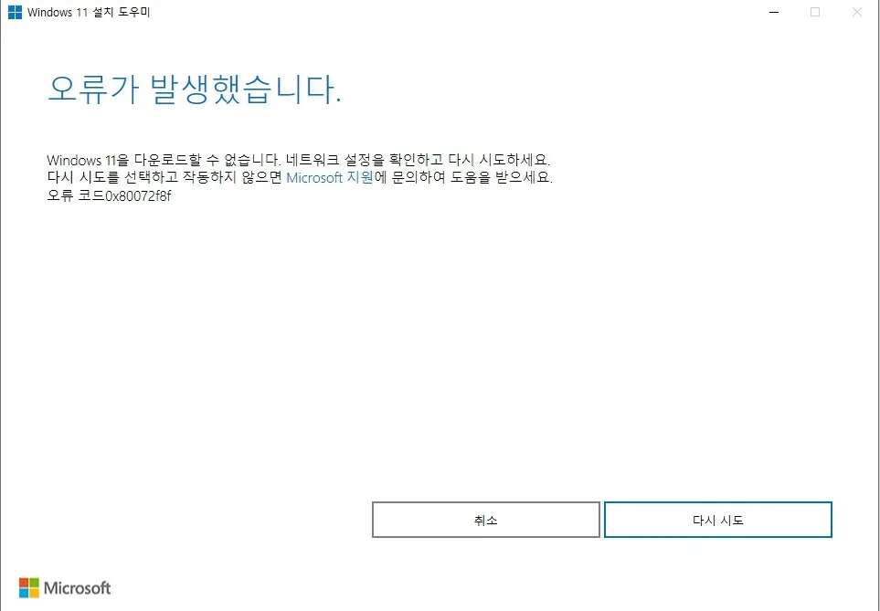
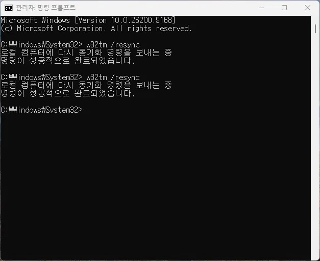

에러 코드 상세
0x80072F8F · 보안 연결 실패·시스템 시간 오류
Windows Update나 Microsoft Store가 보안 연결을 만들지 못할 때 나타나며, 날짜·시간과 인증서 신뢰 상태를 먼저 확인해야 합니다.
Windows 11 설치 도우미에서는 아래처럼 "Windows 11을 다운로드할 수 없습니다. 네트워크 설정을 확인하고 다시 시도하세요."라는 문구와 함께 이 코드가 표시됩니다.

이 코드를 어떻게 해석해야 하나요?
이 코드는 Windows Update나 Microsoft Store가 HTTPS 보안 연결을 완료하지 못했다는 단서입니다. 인터넷이 연결되어 있어도 PC 시간이 인증서 유효기간과 맞지 않거나, 인증서 체인을 신뢰하지 못하면 발생할 수 있습니다. 코드만으로 네트워크 카드나 메인보드 고장을 확정하지 말고 발생한 앱과 네트워크 환경을 함께 기록하세요.
먼저 기록할 내용: 0x80072F8F가 발생한 시각, 직전에 실행한 작업, 최근 설치한 드라이버·업데이트, 재부팅 뒤 같은 코드가 반복되는지를 적어 두세요.
가능성 높은 원인
- 날짜·시간 또는 시간대가 실제 지역과 다르게 설정됨
- Windows Time 서비스가 중지되어 시간이 다시 틀어짐
- VPN·프록시·보안 프로그램이 HTTPS 연결을 가로챔
- 회사·학교 WSUS의 자체 인증서 체인을 PC가 신뢰하지 못함
- 오래된 Windows의 루트 인증서나 TLS 구성 요소 문제
첫 점검 항목
- 시간 동기화 — 설정 > 시간 및 언어 > 날짜 및 시간에서 시간 자동 설정과 시간대를 확인하고 지금 동기화를 실행하세요.
- 동기화 상태 확인 — 관리자 명령 프롬프트에서
w32tm /query /status를 실행하고 필요하면w32tm /resync를 실행하세요.
- 네트워크 경로 비교 — VPN·프록시를 잠시 해제하고 다른 HTTPS 사이트와 다른 네트워크에서 같은 오류가 재현되는지 확인하세요.
- 관리형 PC 확인 — 회사·학교 PC라면 WSUS와 보안 프록시 인증서가 신뢰된 루트 인증 기관에 연결되는지 관리자에게 문의하세요.
- 로그 확인 — WindowsUpdate.log에서 오류가 발생한 시각의 WinHTTP, 인증서, 프록시 관련 메시지를 함께 확인하세요.
확인 결과에 따른 다음 단계
- 시간 동기화만으로 해결될 때 — 재발 여부만 지켜보면 됩니다.
- VPN·프록시 해제로 해결될 때 — 재발 여부만 지켜보면 됩니다.
- 관리형 PC에서도 해결되지 않을 때 — WSUS 인증서 정책을 관리자와 함께 재확인하세요.
데이터와 시스템을 보호하는 주의사항
초기화, 레지스트리 수정, 시스템 파일 수동 교체는 원인이 확실해진 뒤에 시도하는 것이 안전합니다.
앞 단계로 해결되지 않을 때
시간을 맞춘 뒤에도 개인 네트워크에서만 실패한다면 VPN·프록시·보안 프로그램을 의심하고, 회사 네트워크에서만 실패한다면 WSUS 인증서 정책을 먼저 확인하세요. 모든 네트워크에서 Windows Update만 실패한다면 Windows Update 구성 요소와 운영체제 업데이트 상태를 점검합니다.
시스템 복구나 초기화, 드라이버 삭제처럼 원상복구가 힘든 작업을 시작하기 전에, 중요한 파일은 미리 외장 저장장치나 별도 위치에 백업해 두세요.
공식 참고자료
자주 묻는 질문
- 인터넷은 되는데 왜 오류가 나오나요? 일반 웹사이트 접속과 Windows Update의 인증서 검증은 별개입니다. 시간이나 인증서 체인이 맞지 않으면 인터넷이 연결되어도 실패할 수 있습니다.
- 시간을 맞췄는데도 계속 실패합니다. VPN·프록시를 해제하고 다른 네트워크에서 비교하세요. 관리형 PC라면 인증서 정책을 관리자에게 확인해야 합니다.
- w32tm /resync를 실행해도 시간이 안 맞으면 어떻게 하나요? 방화벽이 NTP 통신에 쓰이는 UDP 123번 포트를 막고 있을 수 있습니다. 회사·공용 네트워크라면 관리자에게 해당 포트 차단 여부를 확인해보세요.
최종 검토일: 2026-07-28